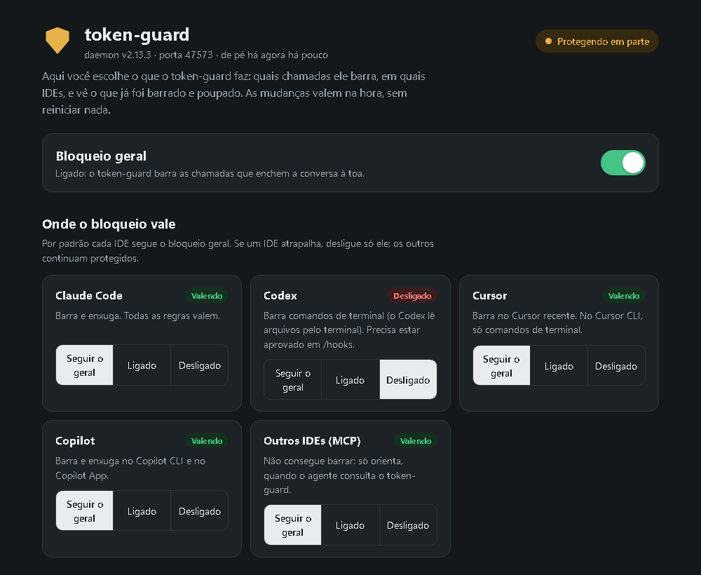

cobertura real por ide
Onde bloqueia, onde orienta. Sem maquiagem.
| Harness | Mecanismo | Bloqueia? | Cobre |
|---|---|---|---|
| Copilot CLI / App | extensão in-process | sim | 4 regras + bigResult real |
| Claude Code | hook http no daemon — sem processo por chamada (PreToolUse + PostToolUse + UserPromptSubmit) + SessionStart | sim | 4 regras + contrato injetado + bigResult* + releitura idêntica vira ponteiro *substituição real no Claude Code ≥ 2.1.121 |
| Codex CLI | hook mcp_tool → servidor MCP do token-guard, sem processo por chamada | sim após aprovar em /hooks | shellDump (o agente lê arquivos pelo shell) |
| Cursor (IDE recente) | preToolUse genérico + eventos nomeados | sim | todas as 4 regras |
| VS Code / Windsurf / Zed / JetBrains | MCP server | orienta | token_audit · token_guard_check · mcp-cost |
configuração sem JSON
Uma tela para decidir o que ele faz.
Rode npx @allansantos-dev/token-guard setup. No Windows, um ícone na bandeja mostra o estado e abre a mesma tela com um clique.
Global ou por IDE
Ligue ou desligue o bloqueio em tudo, ou só em um IDE: Claude Code, Codex, Cursor, Copilot, MCP. Os outros continuam protegidos.
O que cada regra faz
Cada regra vem explicada em português, com um exemplo do que o agente tentou e do que o token-guard fez, e uma chave para ligar ou desligar.
O que já foi poupado
Vê ao vivo o que foi barrado e quantos tokens foram poupados. Só conta o que foi medido: um bloqueio conta como bloqueio, sem número inventado.
